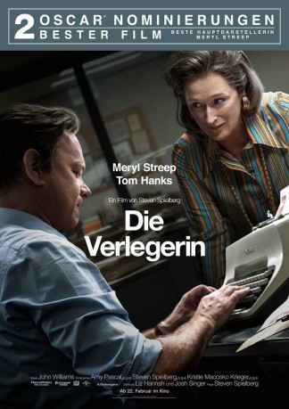

Auszeichnungen: für 2 Oscars nominiert
 gesehen am 11.04.2018
gesehen am 11.04.2018Alternativ: The Post
Auszeichnungen: für 2 Oscars nominiert gesehen am 11.04.2018
 
 IMDB-Wertung: 7.2 / 10
IMDB-Wertung: 7.2 / 10  Metascore:
Metascore: 
In den 1970er Jahren übernimmt Katharine „Kay“ Graham das Unternehmen ihrer Familie – die Washington Post – und wird so zur ersten Zeitungsverlegerin der USA. Schon bald darauf sieht sie sich in eine Auseinandersetzung von ungeheuren Ausmaßen mit der amerikanischen Regierung verwickelt, als sie gemeinsam mit dem ehrgeizigen Redakteur Ben Bradley auf eine Story über vier US-Präsidenten und deren jeweiliges geheimes Wissen über Amerikas Rolle im Vietnam-Krieg stößt. Vollblutjournalist Bradley will die Informationen um jeden Preis veröffentlichen, selbst wenn er dafür ins Gefängnis gehen muss, Graham bangt um die Sicherheit und die finanzielle Zukunft ihrer Angestellten. Ihre Position als Journalistin, amerikanische Patriotin und Geschäftsfrau bringt sie in eine moralische Zwickmühle.
Jahr: 2017
Dauer: 116 Minuten
FSK: 6
Land: USA Studio: Twentieth Century FoxTonspuren: DTS - ,
Untertitel:
Auflösung: 1080p (1920x1040) Größe: 8775 MB
Genre: Thriller, Drama, Geschichte, Biographie
Regisseur:  Steven Spielberg
Steven Spielberg
Drehbuch: Liz Hannah
Soundtrack: John Williams
Darsteller:
 Meryl Streep als Kay Graham
Meryl Streep als Kay Graham Tom Hanks als Ben Bradlee
Tom Hanks als Ben Bradlee Sarah Paulson als Tony Bradlee
Sarah Paulson als Tony Bradlee Bob Odenkirk als Ben Bagdikian
Bob Odenkirk als Ben Bagdikian Tracy Letts als Fritz Beebe
Tracy Letts als Fritz Beebe Bradley Whitford als Arthur Parsons
Bradley Whitford als Arthur Parsons Bruce Greenwood als Robert McNamara
Bruce Greenwood als Robert McNamara Matthew Rhys als Daniel Ellsberg
Matthew Rhys als Daniel Ellsberg Alison Brie als Lally Graham
Alison Brie als Lally Graham Carrie Coon als Meg Greenfield
Carrie Coon als Meg Greenfield Jesse Plemons als Roger Clark
Jesse Plemons als Roger Clark David Cross als Howard Simons
David Cross als Howard Simons Zach Woods als Anthony Essaye
Zach Woods als Anthony Essaye Pat Healy als Phil Geyelin
Pat Healy als Phil Geyelin John Rue als Gene Patterson
John Rue als Gene Patterson Stark Sands als Don Graham
Stark Sands als Don Graham Michael Cyril Creighton als Jake (Young Reporter)
Michael Cyril Creighton als Jake (Young Reporter) Deirdre Lovejoy als Debbie Regan
Deirdre Lovejoy als Debbie Regan Michael Devine als Copy Chief
Michael Devine als Copy Chief Jennifer Dundas als Liz Hylton
Jennifer Dundas als Liz Hylton Michael Stuhlbarg als Abe Rosenthal
Michael Stuhlbarg als Abe Rosenthal Gary Wilmes als Punch Sulzberger
Gary Wilmes als Punch Sulzberger Sasha Spielberg als Woman with Package
Sasha Spielberg als Woman with Package Bryan Burton als Lafayette Protester
Bryan Burton als Lafayette Protester Dan Bittner als Government Lawyer
Dan Bittner als Government Lawyer Kenneth Tigar als Solicitor Griswold
Kenneth Tigar als Solicitor Griswold David Aaron Baker als Alexander Bickel
David Aaron Baker als Alexander Bickel Francis Dumaurier als Head Waiter (Oakroom)
Francis Dumaurier als Head Waiter (Oakroom) Stephen Mailer als Exchange President
Stephen Mailer als Exchange President David Costabile als Art Buchwald
David Costabile als Art Buchwald Carolyn McCormick als Mrs. McNamara
Carolyn McCormick als Mrs. McNamaraDatei: X:\2017(N-Z)\Verlegerin, Die (2017, FSK6, 1920x1040).mkv seit 11.04.2018
Festplatte: HD 2017(A-Z)-2018(A-F)
 Es gibt insgesamt 170 Filme in der Gruppe '2017(N-Z)'
Es gibt insgesamt 170 Filme in der Gruppe '2017(N-Z)'